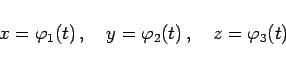

Inhalt Index DeskTop Bronstein

 Geometrie Vektoralgebra und analytische Geometrie Analytische Geometrie des Raumes Grundlegende Begriffe und Formeln, räumliche Koordinatensysteme
Geometrie Vektoralgebra und analytische Geometrie Analytische Geometrie des Raumes Grundlegende Begriffe und Formeln, räumliche Koordinatensysteme


Eine Raumkurve kann durch drei Parametergleichungen
|  | (3.394) |
festgelegt werden. Jedem Wert des Parameters dem nicht immer eine unmittelbare geometrische Bedeutung zugemessen werden kann, entspricht ein bestimmter Punkt der Kurve.
Eine andere Methode der Festlegung einer Raumkurve geht von der Angabe zweier Gleichungen aus:
Jede von ihnen definiert eine Fläche. Eine Raumkurve ergibt sich für alle die Punkte, die beiden Gleichungen genügen, d.h., die Raumkurve ist die Schnittkurve der beiden Flächen. Allgemein liefert jede Gleichung der Form
| (3.396) |
für beliebiges  eine Fläche, die durch die betrachtete Kurve hindurchgeht, so daß sie eine der beiden Gleichungen (3.395) ersetzen kann.
eine Fläche, die durch die betrachtete Kurve hindurchgeht, so daß sie eine der beiden Gleichungen (3.395) ersetzen kann.